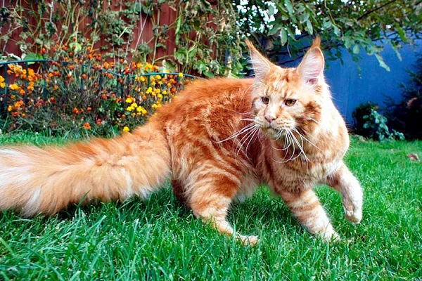
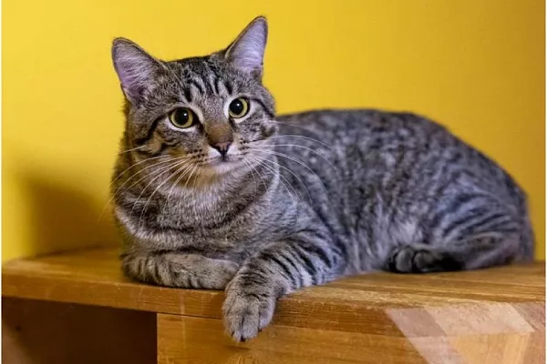
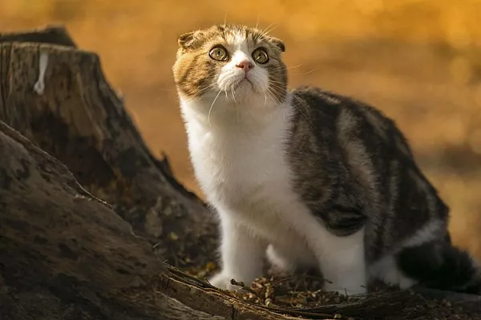
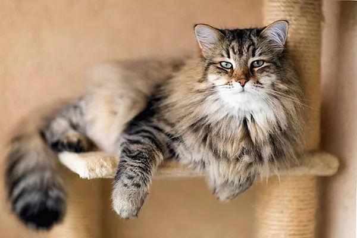
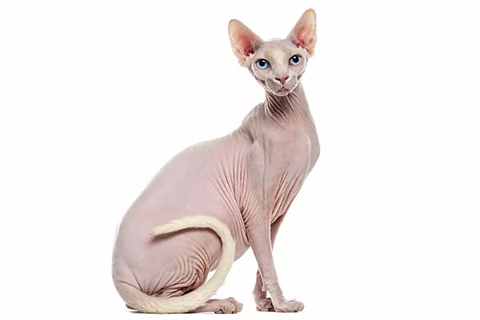
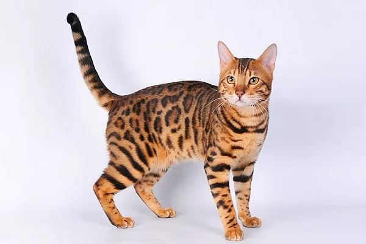
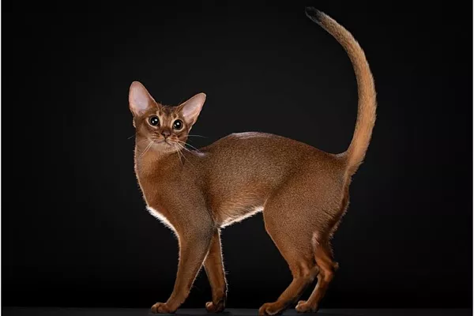
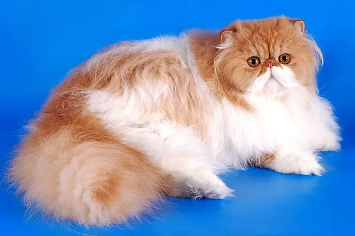

Мейн-кун
Крупная дружелюбная порода с полудлинной шерстью и спокойным характером.
- Страна: США
- Размер: крупный
- Вес: 5–9 кг
- Жизнь: 12–15 лет
Сравнивайте породы по характеру, размеру, типу шерсти и сложности ухода, чтобы выбрать питомца, который подойдёт именно вам и вашему образу жизни.
Заполните поля, чтобы подобрать породу под свои условия.

Крупная дружелюбная порода с полудлинной шерстью и спокойным характером.

Плюшевая шерсть, независимый нрав и крепкое здоровье — классика семейного любимца.

Спокойная и ласковая порода с узнаваемыми сложенными ушками.

Крепкая порода с густой шерстью, ласковым характером и хорошим здоровьем.

Бесшёрстная и очень общительная кошка, требующая регулярного ухода за кожей.

Активная и игривая порода с эффектным «леопардовым» окрасом.

Игривая и любопытная кошка с короткой шерстью и «диким» окрасом.

Роскошная длинная шерсть и спокойный нрав, но требует ежедневного вычёсывания.
Порода — это не только внешность, но и набор поведенческих особенностей, требований к уходу и предрасположенностей к здоровью. Прежде чем выбрать котёнка, изучите не только фотографии, но и характер, активность и продолжительность жизни будущего питомца.
Многие породы выводились для конкретных задач: одним нужна была выносливость, другим — густая шерсть, третьим — общительность. Эти качества до сих пор влияют на поведение кошек и на то, насколько комфортно им будет в вашем доме.
Даже неприхотливые породы нуждаются в регулярном внимании: чистая вода, сбалансированное питание, лоток, когтеточка и место для отдыха — это минимум, который должен быть у каждой кошки. Длинношёрстным породам дополнительно требуется вычёсывание, а бесшёрстным — уход за кожей.
Не забывайте про профилактические осмотры у ветеринара, вакцинацию и обработку от паразитов. Здоровье питомца во многом зависит от того, насколько ответственно вы подходите к его содержанию с первых дней.
Длинношёрстные породы требуют ежедневного вычёсывания, а сфинксов нужно регулярно купать. Честно оцените, сколько времени вы готовы уделять уходу.
Активные бенгалы и абиссинцы не подойдут тем, кто редко бывает дома. Спокойные британцы и персы лучше переносят одиночество.
У некоторых пород есть предрасположенность к заболеваниям. Уточняйте у заводчика результаты тестов и условия содержания родителей котёнка.
Порода — не гарантия характера. Многое зависит от воспитания, социализации и индивидуальных особенностей конкретного животного.
Для первого питомца хорошо подходят британская короткошёрстная, шотландская вислоухая и сибирская — они неприхотливы в уходе и обладают спокойным характером.
В среднем достаточно 20–30 минут активных игр в день и регулярного общения. Активные породы, например бенгальская и абиссинская, требуют больше внимания.
Да, у некоторых пород есть предрасположенность к определённым заболеваниям. Уточняйте у заводчика результаты тестов родителей и узнавайте о типичных проблемах породы заранее.
Да, многие породы отлично чувствуют себя в небольших помещениях, если у них есть когтеточка, место для отдыха и достаточно игрушек для активности.